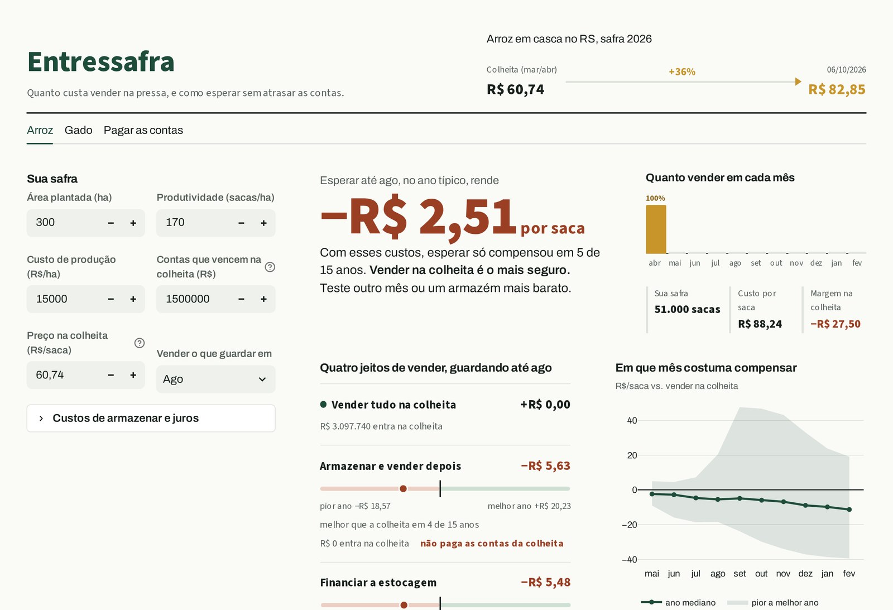
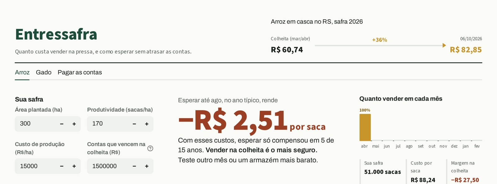
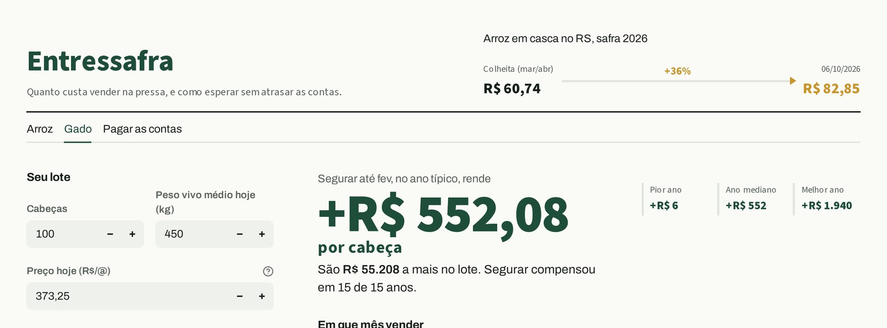
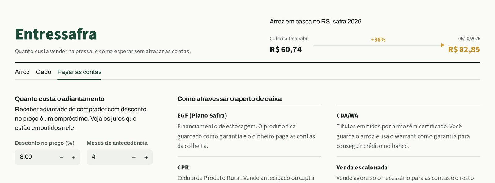

Desafio 3 · Novas Cadeias
Quanto custa vender na pressa, e como esperar sem atrasar as contas. Um simulador que mostra, em R$ por saca, o preço da falta de caixa na colheita.
O problema
O mesmo acontece no gado: segura-se ou vende-se o lote na pressão do caixa, não quando o preço compensa. O produtor sabe produzir, mas perde na hora de vender.
A falta de dinheiro na colheita decide a hora de vender pelo produtor. Ele não vende no melhor momento; vende quando a conta chega. Atacar isso não exige mudar a produção, só devolver a decisão a ele.
A oportunidade
A ideia
Um simulador que mostra, em R$ por saca, quanto o produtor perde vendendo na colheita e quanto pode ganhar esperando (já descontados custos e juros), e lista como pagar as contas enquanto espera. Decisão de venda com número, não com achismo.
Como funciona
Informa a safra (área, produtividade, preço e contas que vencem) e vê, em R$ por saca e na safra inteira, o custo de vender tudo na colheita.
Compara vender na colheita, armazenar, financiar a estocagem e venda escalonada — o número já sai líquido de armazenagem, quebra e juros —, com pior, mediana e melhor ano, e o mês que costuma compensar.
Mostra FEE/EGF, CPR, CDA/WA e o custo real do adiantamento, para o produtor esperar sem atrasar os compromissos da colheita.

O app, de verdade



Por que ainda não existe isso pronto
| Quem já faz algo | O que oferece | O que falta para o nosso produtor |
|---|---|---|
| Safras & Cifras | Já mostra que guardar arroz no RS costuma pagar mais (2006–2021): melhor em set–nov, pior em mar/abr (~R$ 53,39). | É um retrato do passado, não uma conta fechada para a safra de cada um — não desconta custo nem diz como pagar as contas de quem não pode esperar. |
| Grão Direto | IA no WhatsApp com alerta de preço-alvo e até antecipação de recebíveis. | Foco em soja, milho, sorgo e farelo. Não cobre arroz, e não liga o alerta ao custo de financiar a espera. |
| FEE/EGF (Plano Safra) | Crédito de estocagem já existe para o arroz, até 180 dias, com o produto em penhor. | No Plano Safra 2025/26, menos de 80% do volume disponibilizado foi contratado. O dinheiro existe, mas não chega — falta quem traduza o benefício em R$/saca. |
| Apps de gestão (ex.: Aegro) | Conteúdo sobre comercialização, em formato de blog. | Informa, mas não decide: não é uma ferramenta de decisão na hora de vender. |
Por que acreditar
Preço do arroz e do boi do CEPEA e juros (Selic/CDI) do Banco Central. Nada de preço inventado.
Mostra pior, mediana e melhor ano. Não promete adivinhar o futuro; mostra o risco de cada decisão.
Roda no celular, sem internet, e pode ser preenchido por um técnico da Emater/Sebrae na visita. Premissas editáveis.
Nosso MVP e o teste
| Quem testa | O que faz | Sinal de sucesso |
|---|---|---|
| 5 a 10 orizicultores de Alegrete + 2 técnicos (Emater/Sebrae) | Rodam a simulação com a própria safra na janela de colheita e dizem se mudariam a decisão de venda. | ≥ 60% dizem que o número mudaria ou ajudaria a decisão. |
Impacto esperado
O protótipo já roda com dados reais do CEPEA e do Banco Central. O próximo passo é colocá-lo na mão de quem vende, na hora de vender.
Hoje é a falta de caixa que decide a hora de vender. O Entressafra devolve essa decisão ao produtor, com números: quanto custa a pressa e como esperar sem atrasar as contas.